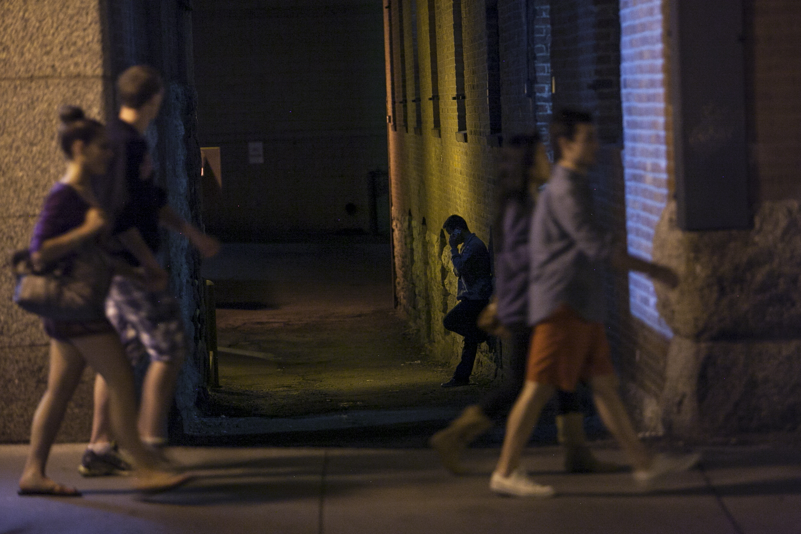

Secret City is a cellphone excursion for two people which combines elements of film, theater, and sound into a mysterious noir story that unfolds throughout Lowertown St.Paul, Minnesota. Participants are invited use their mobile phones to journey through a hidden narrative surrounding the historic Union Depot train station. This exploration unfolds throughout the Secret City, where you are absorbed into a noir story that reluctantly reveals its secrets.
A stranger gives you and a partner small cards with unfamiliar phone numbers written on the back, instructing you to call them at the same time. You find a quiet place and dial the numbers. A lone voice on the other end of your phone speaks, describing the room you are in as if they're standing right next to you. The voice instructs you to get up, walk out the door, and enter into the Secret City. Follow carefully. You are the only one that can unravel your story.
A collaboration with Daniel Dean. Presented by Northern Lights.mn at the Northern Spark Festival Documentation by Eric Schleicher with additional photos by Olga Ivanova.
Secret City
2013
call center software, audio recordings
one hour audio tour for two people